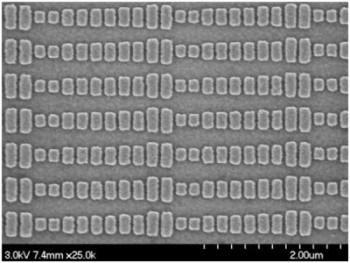
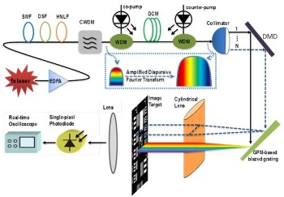
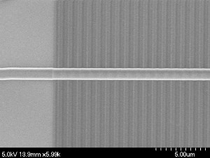
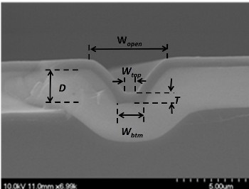
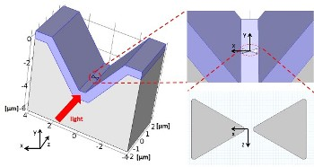
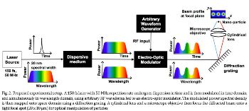
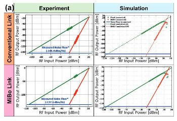

Gap-plasmon Metasurface
A sub-wavelength GPM-based grating at telecommunication wavelengths has been designed and fabricated. 75.6% power efficiency with ~ 0.4deg / 10nm spatial dispersion has been measured for TE polarized waves at normal incidence. The fabricated device has been tested in a wide area real-time dispersive imaging system and < 300 um spatial resolution has been demonstrated experimentally.
Time Strech System
We demonstrate a fast dispersive laser scanning system by using MEMS digital micro-mirror arrays technology. The proposed technique utilizes real-time dispersive imaging system, which captures spectrally encoded images with a single photodetector at pulse repetition rate via space-to-time mapping technology. Wide area scanning capability is introduced by using individually addressable micro-mirror arrays as a beam deflector
Optical Leaky Wave Antenna
We experimentally demonstrate directive radiation from a silicon nitride (Si3N4) waveguide-based OLWA. The OLWA design comprises 50 crystalline Si perturbations buried inside the waveguide, with a period of 1 μm, each with a length of 260 nm and a height of 150 nm, leading to a directive radiation pattern at telecom wavelengths. The measured far field radiation pattern at the wavelength of 1540 nm is very directive, with the maximum intensity at the angle of 84.4° relative to the waveguide axis and a half-power beam width around 6.2°.
Trench Waveguide
We demonstrate a novel technique to fabricate sub-micron silicon nitride waveguides using conventional contact lithography with MEMS-grade photomasks. Potassium hydroxide anisotropic etching of silicon facilitates line reduction and roughness smoothing and is key to the technique. The fabricated waveguides is measured to have a propagation loss of 0.8dB/cm and nonlinear coefficient of γ = 0.3/W/m. A low anomalous dispersion of <100ps/nm/km is also predicted
Plasmonic Optical Trapping
We demonstrate optical trapping using a silicon nitride (Si3N4) trench waveguide on which bowtie plasmonic nanoantennas are employed for enhancing optical force. The waveguide evanescent field is transformed and then enhanced by the plasmonic nanoantennas deposited on the waveguide surface. We show that with gold bowtie nanoantennas, the waveguide system exhibits outstanding trapping capability on 10 nm polystyrene nanoparticles, due to a 60-fold electric field enhancement in proximity of the nanoantenna gap. This enhancement causes a boost of the optical trapping force by three orders of magnitude.
Optical Tweezing
We present a new approach for electronic control of optical tweezers by using space-time‐wavelength mapping (STWM), a technique that uses time‐domain-modulation to control local intensity values, and hence the resulting optical force, in space. The proposed technique enables direct control of magnitude, location, and polarity of force hot‐spots created by Lorentz force (gradient force).
Modulation Index Booster
The spur-free dynamic range (SFDR) of the MiBo approach is experimentally and numerically measured. Experimental SFDR data is reported at 10 GHz. By utilizing commercial link simulators (VPI transmission maker) with realistic component models simulations at 10 GHz and 100 GHz enable predictive SFDR analysis.